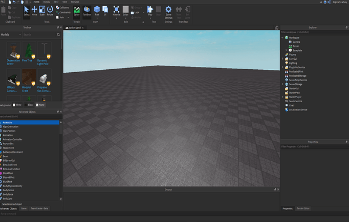
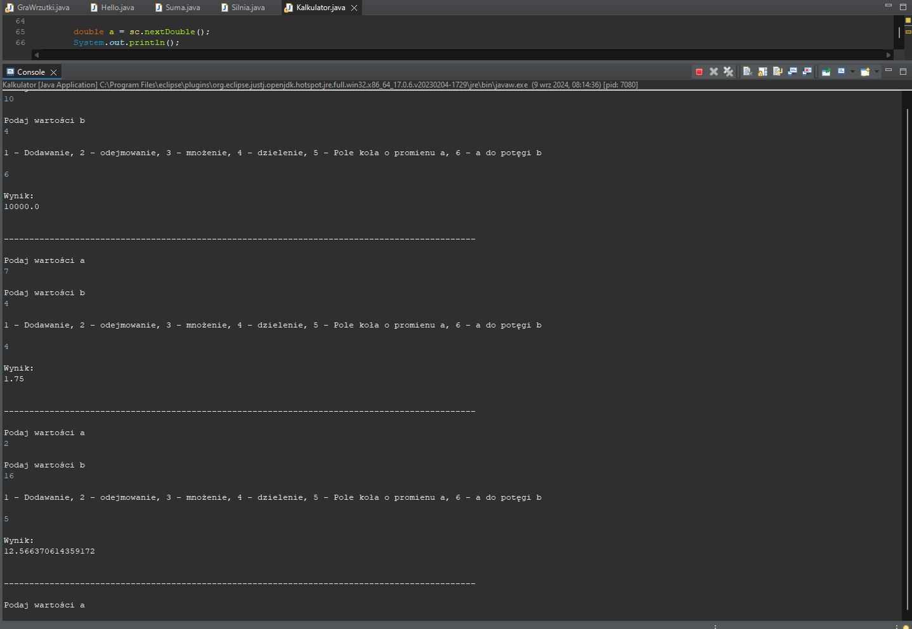

Nazywam się Mateusz, interesuje się przedmiotami ścisłymi, głównie matematyką. Swoją przyszłość wiąże z informatyką, głównie programowaniem aplikacji, gier i innych programów.
Stan przed pierwszą klasą:
W szkole podstawowej miałem nauczyciela informatyki, który mnie dużo nie nauczył. Po szkole podstawowej umiem Word, tworzyć zaawansowane prezentacje w Power Point to jest z animacjami, przyciskami akcji, tworzyć podstawowe programy obliczeniowe w Excel i umiem dużo Scratch bo sam dużo w domu tam robiłem. W szkole mieliśmy jakoś 4 lekcje z HTML ale dużo się na nich nie nauczyłem i sporo już zapomniałem.
Co do języków programowania trochę się sam zainteresowałem Roblox Studio i zacząłem się uczyć języka Luau (czyli odmiany Lua używanej w grach na platformie Roblox). Chciałbym się nauczyć języka Java i może Lua żeby być w stanie w przyszłości pracować w branży informatycznej jako programista.
Roblox Studio:

Jeszcze nie wiem czy jako moją główną zajęcie chciałbym tworzyć gry czy jednak aplikacje. Napewno chciałbym się sam uczyć tworzyć gry i jakieś zaawansowane gry tworzyć. Interesuje się się tworzeniem modeli i animacji i chciałbym w przyszłości też rozwijać się w tym kierunku. Jestem gotowy poświęcić dużo czasu na naukę informatyki.
Klasa 1:
Nauczyłem się dużo rzeczy w Javie, takich jak instrukcja warunkowa, iteracja, rekurencja, tablice, metody, sortowanie metodą bubble sort i selection sort, pobieranie danych z plików. Nauczyłem się też jak świadczy ta strona HTML i CSS do pewnego poziomu. Dalej jestem zainteresowany nauką języka Java i dalej prywatnie uczę się języka Lua.
